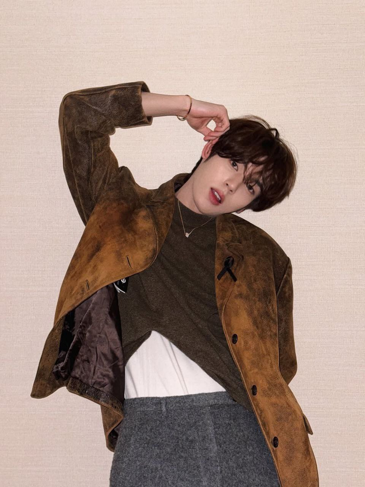
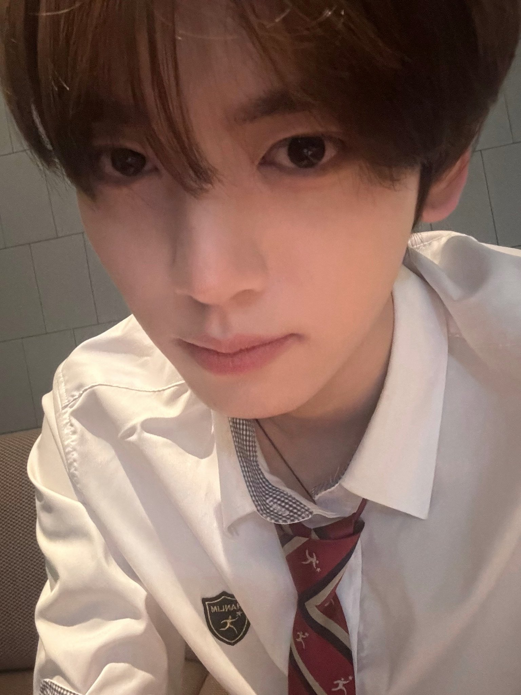
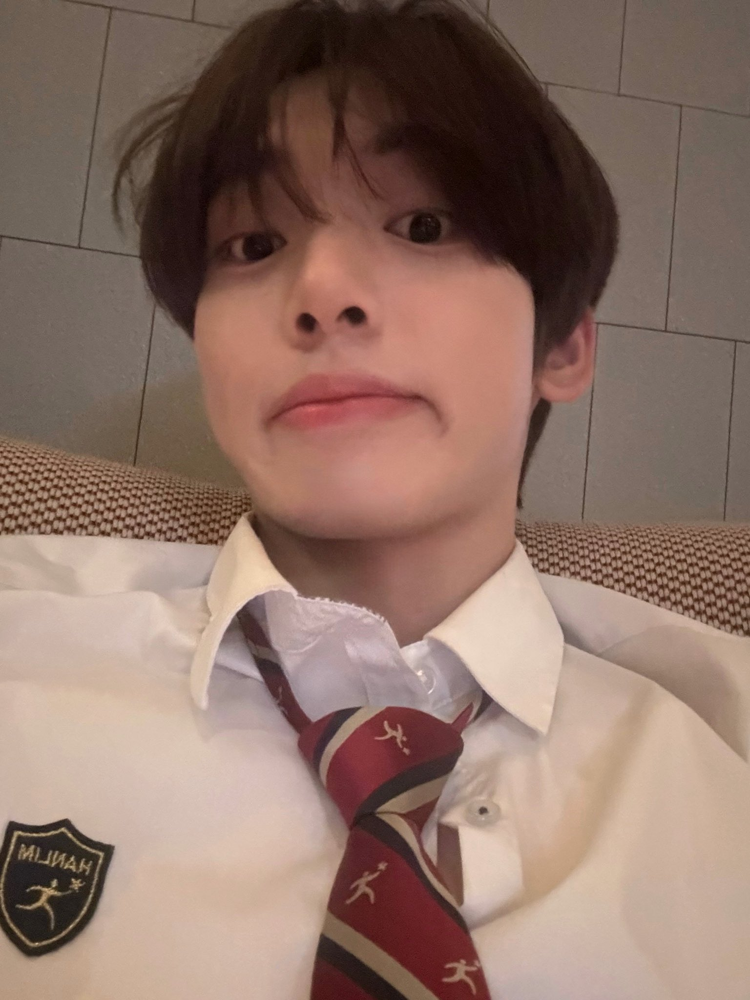

韓維辰-Han YuJin
基本資料
生日：2007/03/20
身高：181.5cm
MBTI：ISTJ
國籍：韓國
動物塑：
兔子
個人魅力點：
外觀太過可愛，在boys planet被要求
說話要高一點，導致說話不利索、
嗓音特別低沉(連哥哥們都震驚的程度)、鼻樑痣、
調皮的邪惡小兔、全自動闖禍機(倒楣熊不是停播了嗎)
經歷
2024年4月28日開始，與Leeseo、文成賢一同擔任《人氣歌謠》固定MC。2024年6月2日，與丁潤浩、姜諧潾一同擔任《2024 Coca-Cola K-Wave Concert Inkigayo》MC。
音樂原聲帶
2025/06/16：Running（달려가）[《競選夥伴》 OST Special Track]
2025/09/06：Salvation（구원）[《十二使者》 OST Special Track]
綜藝節目
2023/11/03：PIXID
音樂節目主持
2023/12/03：《人氣歌謠》 擔任特別MC
2024/02/22：M Countdown 與朴乾旭擔任特別MC
2024/03/10：《人氣歌謠》 擔任特別MC
2024/04/28-2025/09/14：《人氣歌謠》 與Leeseo、文成賢擔任固定MC
活動主持
2024/06/02：《K-Wave Concert》
2024/09/13：《SBS 人氣歌謠 LIVE in TOKYO 2024》



- © ZEROSE | ZB1